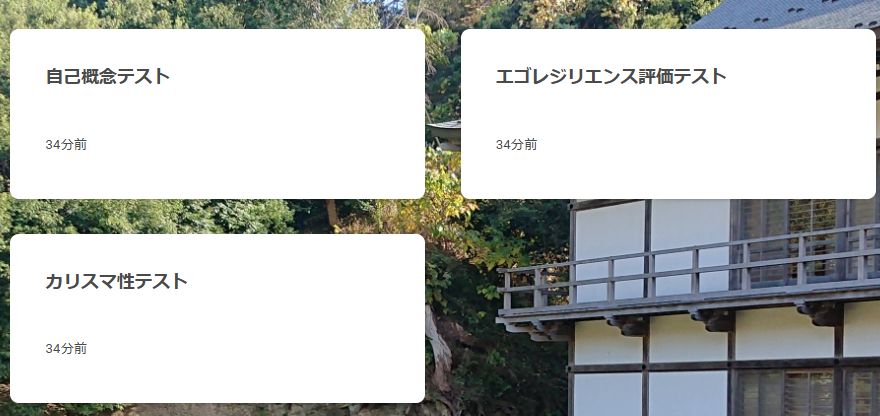
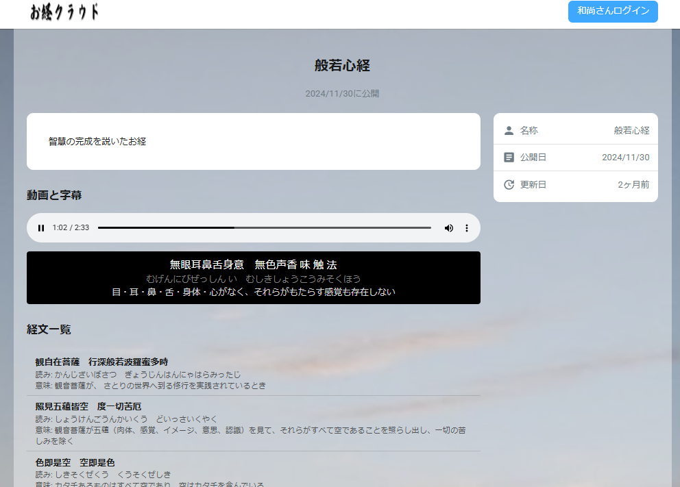
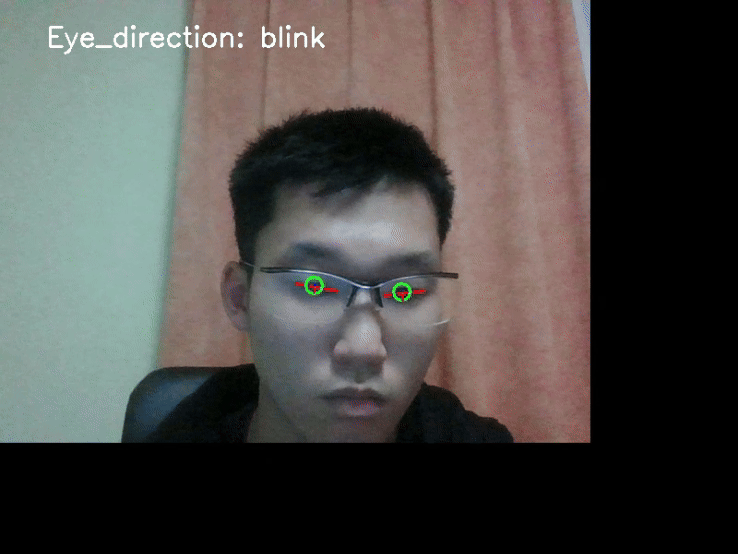

プロフィール
自己紹介
三島智貴 (Mishima Tomoki)
筑波大学情報メディア創成学類に在学しています。これまでに複数の開発インターンシップやハッカソンに参画してきました。一番得意な技術スタックはRuby on Railsです。
アカウント
- GitHub: mametaro99
- Zenn: mametaro
- Atcoder: Mametaro700
- wantedly: https://www.wantedly.com/id/iponweqtvafdxygz
- slideshare: bearsmichimato99
- twitter: zero_mametaro0
趣味
- 登山
- 水泳
- お寺＆美術館巡り
- 筋トレ
- 読書
興味
- AWSなどのクラウドサービスを使ったインフラ構築・設計
- アプリケーションのパフォーマンスチューニング
- アンチエイジング、不老不死になるための研究
経歴
- 2018年4月～2021年3月: 松江商業高等学校情報処理科卒業 (野球部: ピッチャー)
- 2021年4月～2023年3月: 広島経済大学メディアビジネス学部ビジネス情報学科 中退
- 2023年4月～現在: 筑波大学情報学群情報メディア創成学類 ２年次編入 (ワンダーフォーゲルクラブ)
資格
- 2021年1月: 基本情報技術者
- 2021年12月: TOEIC Listening and Reading 795点
- Atcoder 茶色
現在の活動
- エンジニアコミュニティへの参加、登壇
- AWSなどのクラウドインフラの勉強と開発
これから取り組みたいこと
- TerraformなどのIaCを使ったインフラ構築・運用
- ボトルネックになっている機能のパフォーマンスチューニング
- フルスタック開発(とくに、バックエンドを中心とした幅広い範囲での設計、開発、運用を主体的に行えるようにしたい)
プログラミング経験・開発経験
| 期間 | プロジェクト名 | 開発人数 | 主な役割 | 使用技術 | 主な取り組み |
|---|---|---|---|---|---|
| 2021年10月～1月 | 産学連携授業: 課題提出アプリ | 4人 | サーバーサイド開発 | Ruby on Rails, Redmine | 課題提出システムの設計・開発、データベース設計 |
| 2021年3月 | スモウルビー甲子園 | - | - | Ruby | 決勝大会ベスト16への進出、エラー原因特定とアルゴリズムの考察・実装 |
| 2023年8月～9月 | 株式会社ネットワーク応用通信研究所 夏季10daysインターン | 4人 | DB設計、サーバーサイド開発 | Rails, Docker | Railsチュートリアルで開発するSNSアプリの改良(Like機能、複数の画像アップロード), GitHub |
| 2023年9月～12月 | モトヤ株式会社インターン | 2人 | 開発・設計、要件定義 | GoogleAppScript, HTML, JavaScript | 倉庫管理システム開発、ユーザ検索機能の改善 |
| 2024年1月～3月 | 株式会社ネットワーク応用通信研究所インターン | 2人 | サーバーサイド開発 | Rails, Rspec, ransack, Jenkins, Docker | Repecでのモックを使った例外処理テストコード実装、UI改善、ransackでのフリーワード検索機能実装 |
| 2024年2月～7月 | Has-key アルバイト | 2人 | バックエンド・フロントエンド | NestJS, Next.js, TypeScript, Dataloader | N+1問題解決、例外処理のカスタマイズ、検索フォームのUI実装 |
| 2024年7月 | サポーターズ技育CAMPハッカソン 自己分析アプリ「JibunLog」 | 4人 | API/DB設計, API開発 | Rails, Next.js, Docker, MySQL, OpenAI API | 生成系AIによる自己分析、フロントエンドとバックエンドの連携、GitHub |
| 2024年12月 | サポーターズ技育CAMPハッカソン スポーツマッチングアプリ「スポッ友」 | 3人 | リーダー、設計、インフラ | Rails, Fly.io, AWS S3, Docker, GitHub Actions | CI/CD構築, GoogleMapAPI連携, タスク管理, GitHub, Zenn記事 |
ポートフォリオ
1.心理学・医療健康テストアプリ「禅問道」: Zenn記事

2.お経の字幕表示アプリ「お経クラウド」: Zenn記事
お経の動画や音声ファイルに合わせて意味や読み方が表示される

3.顔認証＆目線認証ログインアプリ: Zenn記事
Webカメラで目線の方向を検知して、手順通りに目線を動かすと自動でログインできる
